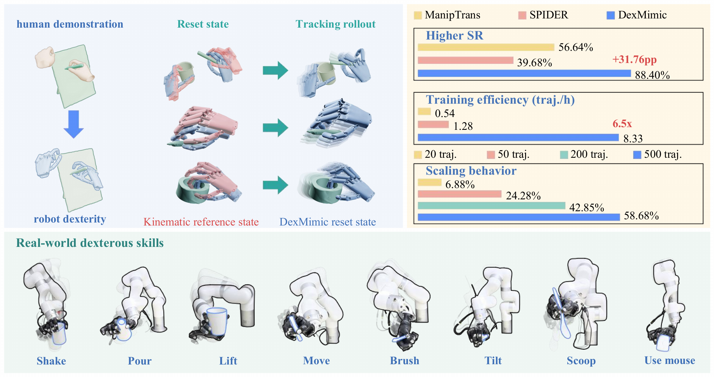
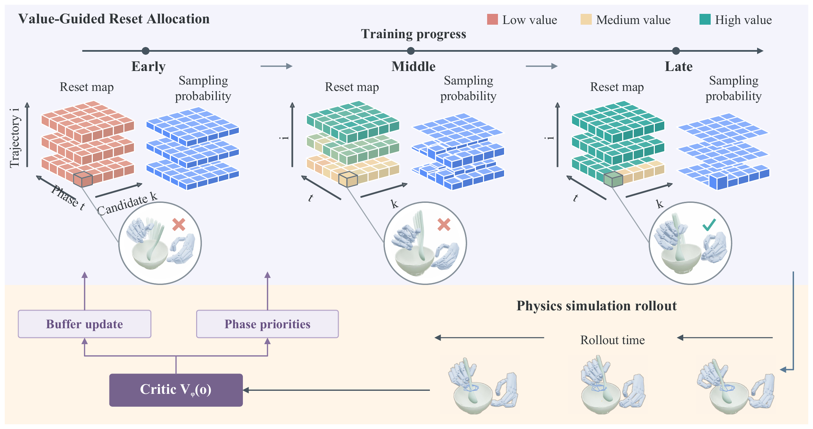

DexMimic: A Generalist Dexterous
Hand–Object Tracking Policy
via Value-Guided Reset Allocation
Appendix

Abstract
Achieving human-like dexterous manipulation remains a central challenge in robotics. Learning from human hand–object interaction (HOI) datasets offers a promising pathway to diverse dexterous skills, yet existing physics-based approaches train specialist policies for individual trajectories, thereby limiting skill reuse at scale. We introduce DexMimic, a generalist dexterous hand–object tracking policy jointly trained across diverse HOI trajectories. Efficient joint training requires allocating each rollout to both an undertrained phase and a starting state that supports continued tracking. DexMimic realizes this insight through Value-Guided Reset Allocation, which adapts the initialization distribution online to prioritize difficult phases and select reset states with higher expected tracking returns. We further introduce a benchmark spanning training, fine-tuning, and generalization. Experiments show improved tracking success and training efficiency, faster fine-tuning, and the potential for zero-shot generalization to unseen trajectories and objects; larger training sets further improve efficiency and generalization. Finally, we validate DexMimic on a real-world dexterous manipulation platform.
Method Overview
